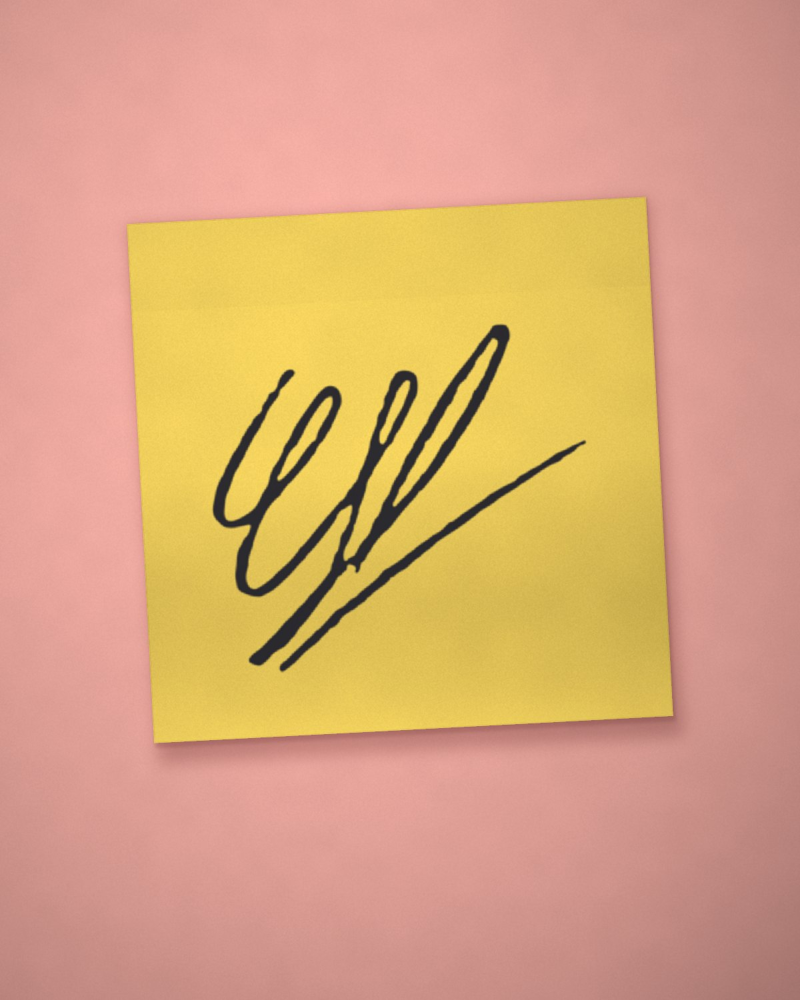

Recherche un stage d'un mois en février 2027
Clarence Seguy-Houel, designer UX/UI. Des interfaces simples, avec du caractère.
Clarence Seguy-Houel, étudiant en UX/UI design à L'École de Design Nantes Atlantique. Je conçois des parcours simples, de la recherche utilisateur au prototype.
Projets
Ma méthode
« Chaque écran commence par une question : qu'est-ce que la personne en face essaie de faire ? »
À propos
Une bonne interface ne se remarque pas. Elle guide, elle rassure et laisse toute la place au contenu. Mon travail commence toujours par les personnes qui vont l'utiliser.

Designer UX/UI, je conçois des parcours simples et des interfaces qui ont du caractère, de la recherche utilisateur au prototype. J'aime comprendre un problème en profondeur avant de dessiner le moindre écran : entretiens, parcours utilisateurs, puis prototypes testés et retravaillés jusqu'à ce que tout paraisse évident.
Recherche 01
- Entretiens utilisateurs
- Personas
- Parcours utilisateur
- Tests d'utilisabilité
Conception 02
- Architecture de l'information
- Wireframes
- Prototypage
- Design system
Logiciels 03
- Figma avancé
- Revit bonne maîtrise
- Illustrator fonctions principales
- HTML bases
- Framer en apprentissage
- Blender en apprentissage
IA 04
- Gemini
- Claude
- ChatGPT
Parcours
- Formation en design UX/UIL'École de Design Nantes Atlantique
- Bac technologique STI2DLycée Réaumur
- Stage en cabinet d'architecture
Contact